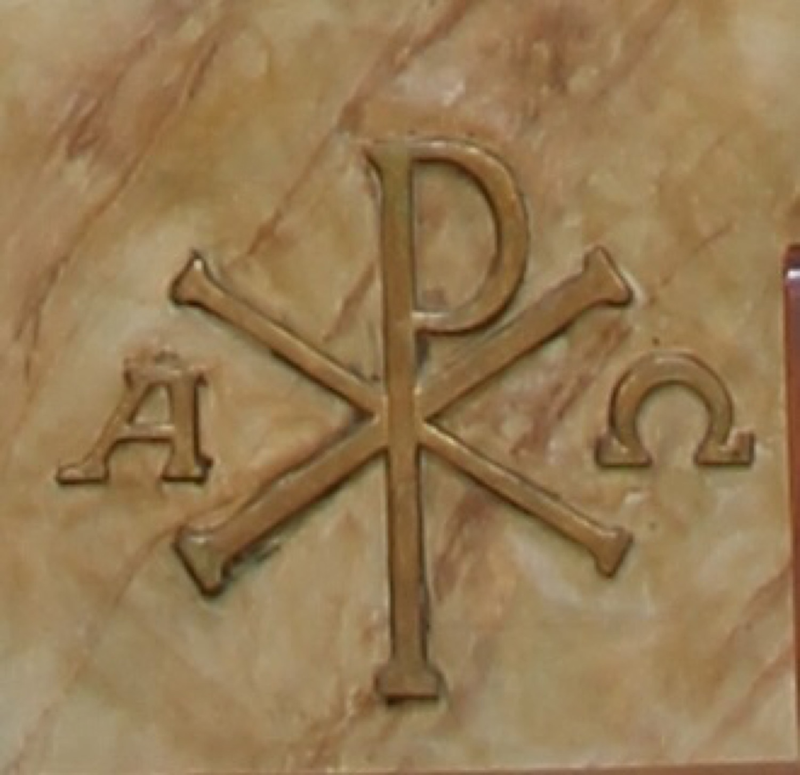

El crismó es un dels símbols cristians més antics. Es tracta d’un monograma compost per les dues primeres lletres majúscules de la paraula “Crist” en grec, superposades: la khi (X) i la rho (P). Als costats hi apareixen la primera i la darrera lletra de l’alfabet grec, alfa (A) i omega (Ω), per recordar que Jesucrist és “l’Alfa i l’Omega, el primer i el darrer, el principi i la fi”.